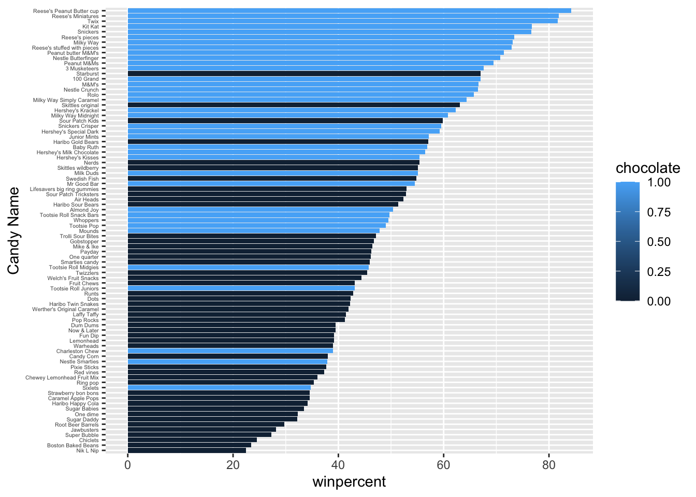
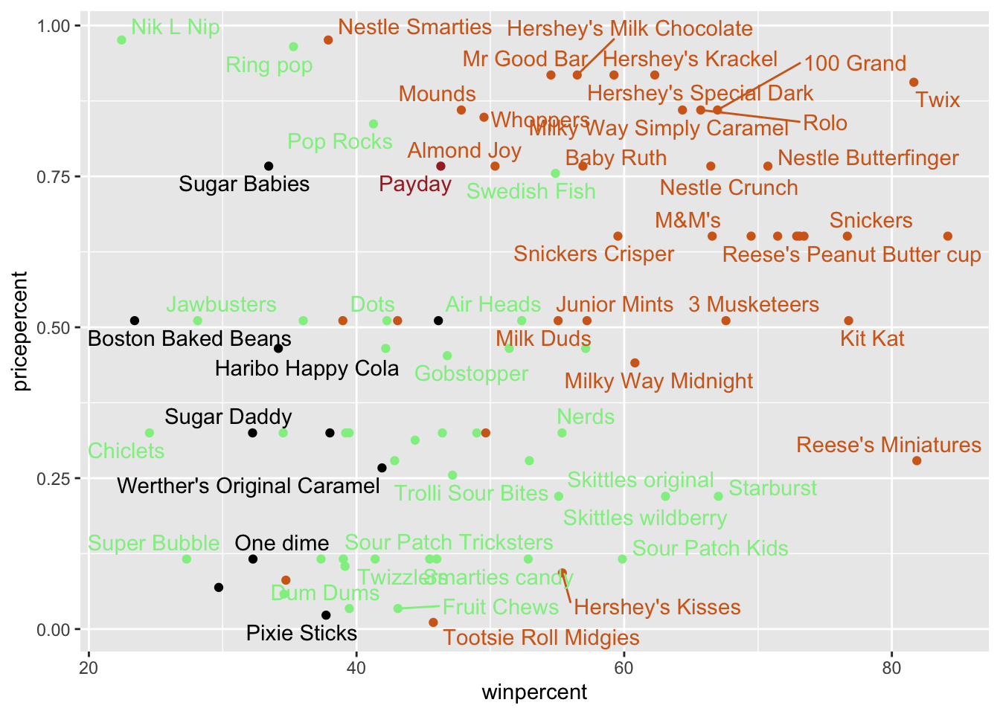
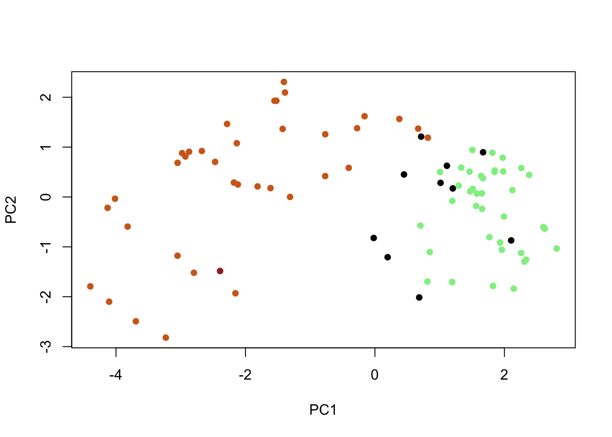
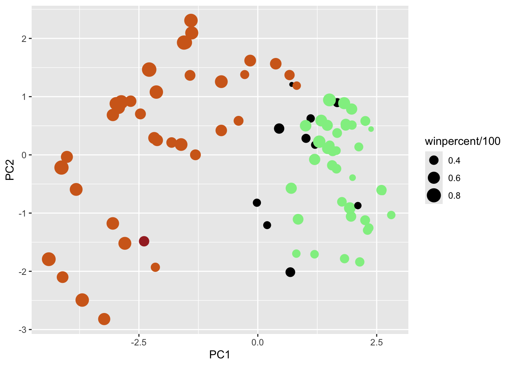
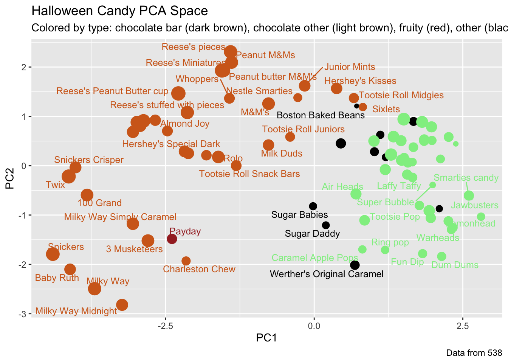

Q5. What is the winpercent value for “Tootsie Roll Snack Bars”?
candy["Tootsie Roll Snack Bars", ]$winpercent
[1] 49.6535
Side-note: the skimr::skim() function
library(skimr)skim(candy)
Data summary
Name
candy
Number of rows
85
Number of columns
12
_______________________
Column type frequency:
numeric
12
________________________
Group variables
None
Variable type: numeric
skim_variable
n_missing
complete_rate
mean
sd
p0
p25
p50
p75
p100
hist
chocolate
0
1
0.44
0.50
0.00
0.00
0.00
1.00
1.00
▇▁▁▁▆
fruity
0
1
0.45
0.50
0.00
0.00
0.00
1.00
1.00
▇▁▁▁▆
caramel
0
1
0.16
0.37
0.00
0.00
0.00
0.00
1.00
▇▁▁▁▂
peanutyalmondy
0
1
0.16
0.37
0.00
0.00
0.00
0.00
1.00
▇▁▁▁▂
nougat
0
1
0.08
0.28
0.00
0.00
0.00
0.00
1.00
▇▁▁▁▁
crispedricewafer
0
1
0.08
0.28
0.00
0.00
0.00
0.00
1.00
▇▁▁▁▁
hard
0
1
0.18
0.38
0.00
0.00
0.00
0.00
1.00
▇▁▁▁▂
bar
0
1
0.25
0.43
0.00
0.00
0.00
0.00
1.00
▇▁▁▁▂
pluribus
0
1
0.52
0.50
0.00
0.00
1.00
1.00
1.00
▇▁▁▁▇
sugarpercent
0
1
0.48
0.28
0.01
0.22
0.47
0.73
0.99
▇▇▇▇▆
pricepercent
0
1
0.47
0.29
0.01
0.26
0.47
0.65
0.98
▇▇▇▇▆
winpercent
0
1
50.32
14.71
22.45
39.14
47.83
59.86
84.18
▃▇▆▅▂
Q6. Is there any variable/column that looks to be on a different scale to the majority of the other columns in the dataset?
Yes, winpercent looks to be on a different scale to the majority of the other columns in the dataset. This requires me to scale my data before doing any analysis like PCA etc.
Q7. What do you think a zero and one represent for the candy$chocolate column?
Welch Two Sample t-test
data: chocolate_candy$winpercent and fruit_candy$winpercent
t = 6.2582, df = 68.882, p-value = 2.871e-08
alternative hypothesis: true difference in means is not equal to 0
95 percent confidence interval:
11.44563 22.15795
sample estimates:
mean of x mean of y
60.92153 44.11974
The difference is statistically significant.
Q13. What are the five least liked candy types in this set?
play <-c("d", "a", "c")sort(play)
[1] "a" "c" "d"
order(play)
[1] 2 3 1
sort() organises the output in order, but order() is more useful because it specifically shows you the ranking position of the variable (candy)
head( candy[order(candy$winpercent), ], 5)
chocolate fruity caramel peanutyalmondy nougat
Nik L Nip 0 1 0 0 0
Boston Baked Beans 0 0 0 1 0
Chiclets 0 1 0 0 0
Super Bubble 0 1 0 0 0
Jawbusters 0 1 0 0 0
crispedricewafer hard bar pluribus sugarpercent pricepercent
Nik L Nip 0 0 0 1 0.197 0.976
Boston Baked Beans 0 0 0 1 0.313 0.511
Chiclets 0 0 0 1 0.046 0.325
Super Bubble 0 0 0 0 0.162 0.116
Jawbusters 0 1 0 1 0.093 0.511
winpercent
Nik L Nip 22.44534
Boston Baked Beans 23.41782
Chiclets 24.52499
Super Bubble 27.30386
Jawbusters 28.12744
Q14. What are the top 5 all time favorite candy types out of this set?
Q15. Make a first barplot of candy ranking based on winpercent values.
ggplot(candy, aes(x = winpercent, y =reorder(row.names(candy), winpercent), fill = chocolate)) +geom_col() +labs(y="Candy Name") +theme(axis.text.y =element_text(size =4))

I want a more custom color scheme where I can see both chocolate and bar and fruity etc. all from the one plot. To do this we can roll our own color vector…
library(wesanderson)# Place holder color vector# rep() mycols <-rep("black", nrow(candy))# I want 2nd entry of my dataset to be bluemycols[as.logical(candy$bar)] <-"brown"mycols[as.logical(candy$chocolate)] <-"chocolate"mycols[as.logical(candy$fruity)] <-"pink"# Use blue for your favorite candyrownames(candy) =="Haribo Gold Bears"
Warning: ggrepel: 29 unlabeled data points (too many overlaps). Consider
increasing max.overlaps

Q19. Which candy type is the highest ranked in terms of winpercent for the least money - i.e. offers the most bang for your buck?
Reese’s minatures
Q20. What are the top 5 most expensive candy types in the dataset and of these which is the least popular?
Nik L Nip, Nestle Smarties, Ring Pop, Hershey’s Krackel, Hershey’s Milk Chocolate
ord <-order(candy$pricepercent, decreasing = T)head(candy[ord,c(11,12)], n =5)
pricepercent winpercent
Nik L Nip 0.976 22.44534
Nestle Smarties 0.976 37.88719
Ring pop 0.965 35.29076
Hershey's Krackel 0.918 62.28448
Hershey's Milk Chocolate 0.918 56.49050
Q21. Make a barplot again with geom_col() this time using pricepercent and then improve this step by step, first ordering the x-axis by value and finally making a so called “dot chat” or “lollipop” chart by swapping geom_col() for geom_point() + geom_segment().
ggplot(candy, aes(x = pricepercent, y =reorder(row.names(candy), pricepercent))) +geom_point()+geom_segment(aes(xend =0, yend =reorder(row.names(candy), pricepercent)), color ="lightgreen")
Q22. Examining this plot what two variables are anti-correlated (i.e. have minus values)?
Chocolate and Fruity
Q23. Similarly, what two variables are most positively correlated?
Variables that are identical, variable compared to themselves (i.e. Chocolate=Chocolate, fruity=fruity) Other than that, Chocolate and bar or Chocolate and winpercent or bar and pricepercent or bar and nougat
Q24. What original variables are picked up strongly by PC1 in the positive direction? Do these make sense to you? Fruity, pluribus, and hard variables are picked up strongly by PC1 in the positive direction. This makes sense becuase it correlates to the previous correlation graph that told us the three variable, shown in the positive direction, positively correlate with each other. Similarly, variables “chocolate” and “bar” being heavily in the negative direction makes sense since the correlation graph told us that those two variables correlate with each other well.
plot(pca$x[,1:2], col=mycols, pch=16)

my_data <-cbind(candy, pca$x[,1:3])
p <-ggplot(my_data) +aes(x=PC1, y=PC2, size=winpercent/100, text=rownames(my_data),label=rownames(my_data)) +geom_point(col=mycols)p

library(ggrepel)p +geom_text_repel(size=3.3, col=mycols, max.overlaps =7) +theme(legend.position ="none") +labs(title="Halloween Candy PCA Space",subtitle="Colored by type: chocolate bar (dark brown), chocolate other (light brown), fruity (red), other (black)",caption="Data from 538")
Warning: ggrepel: 39 unlabeled data points (too many overlaps). Consider
increasing max.overlaps

library(plotly)
Attaching package: 'plotly'
The following object is masked from 'package:ggplot2':
last_plot
The following object is masked from 'package:stats':
filter
The following object is masked from 'package:graphics':
layout